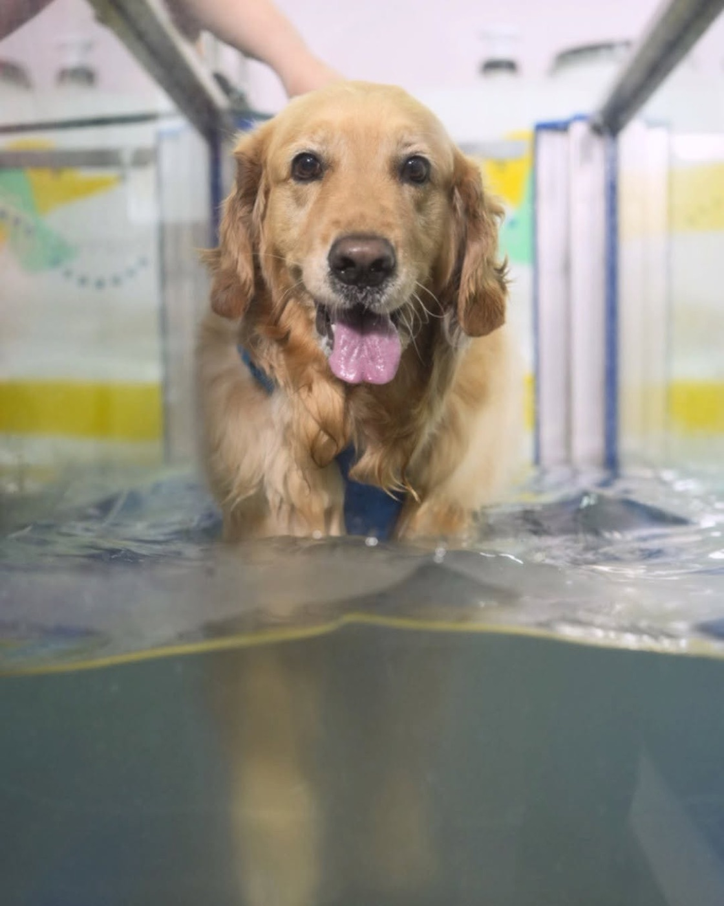
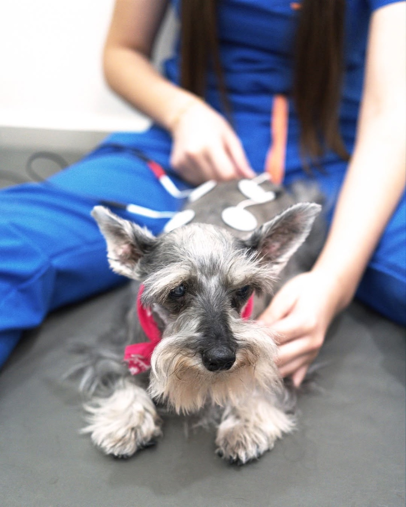
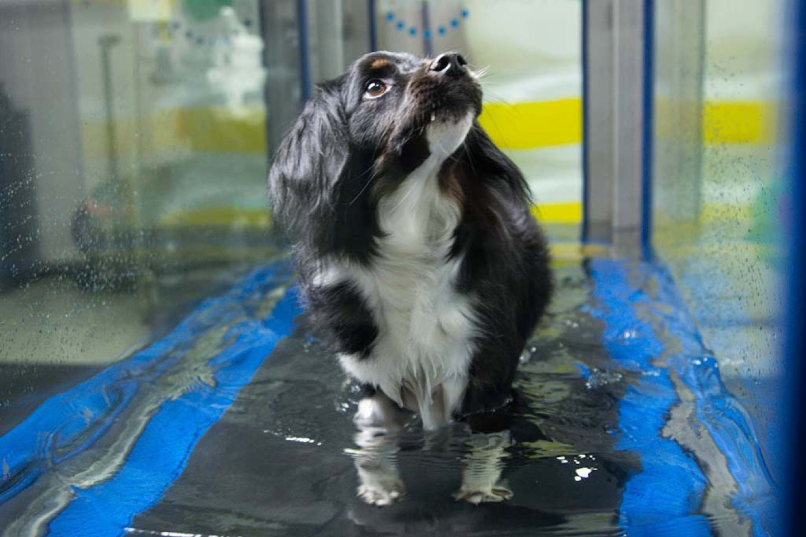
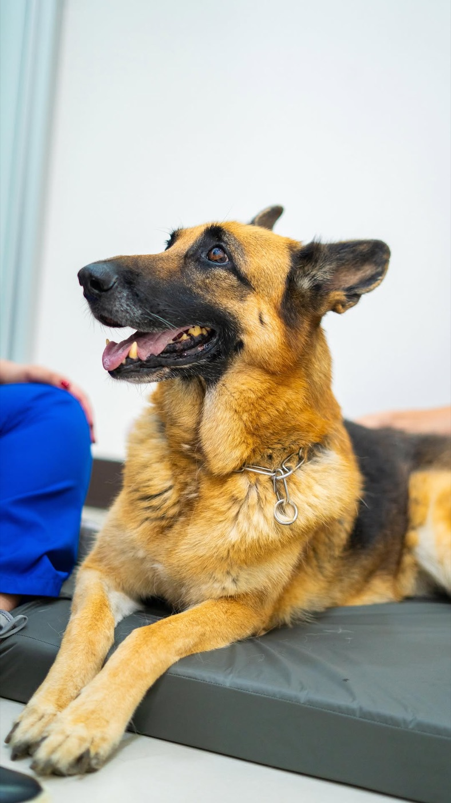
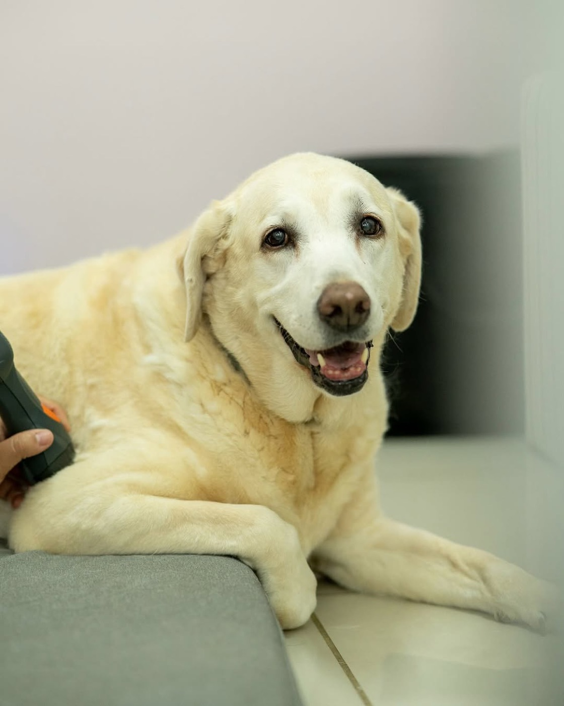
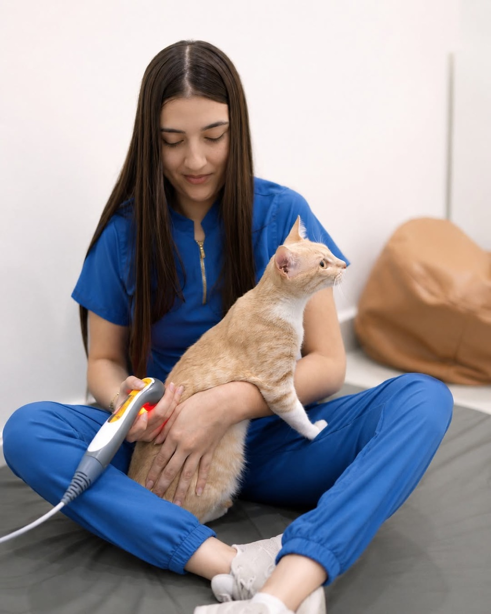
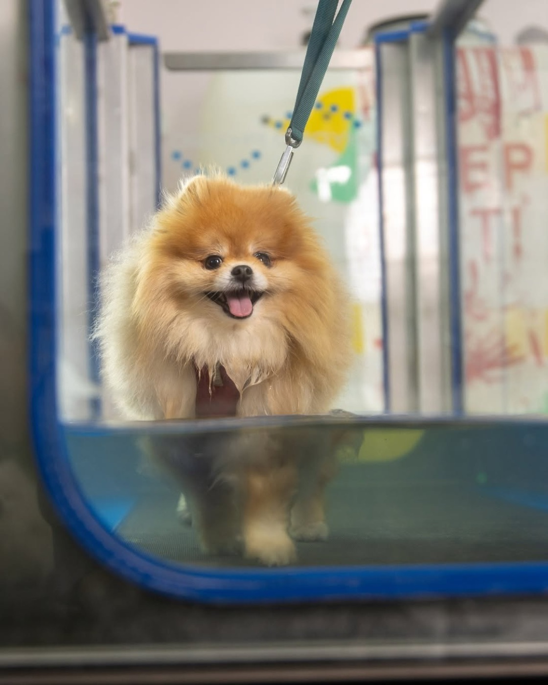
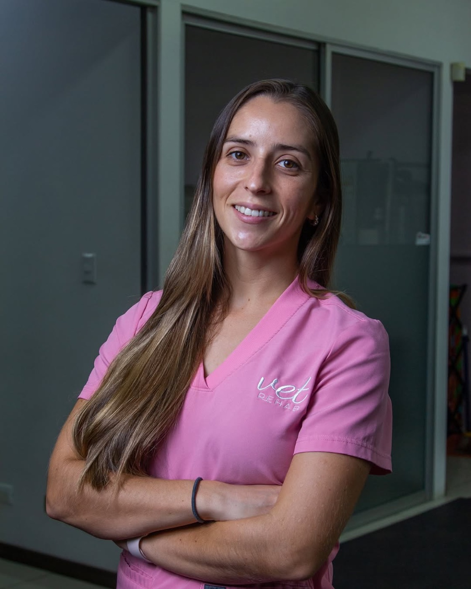
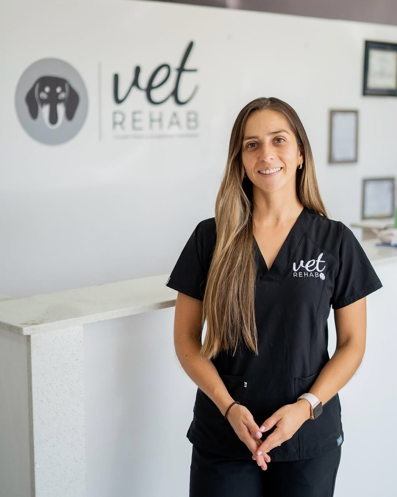
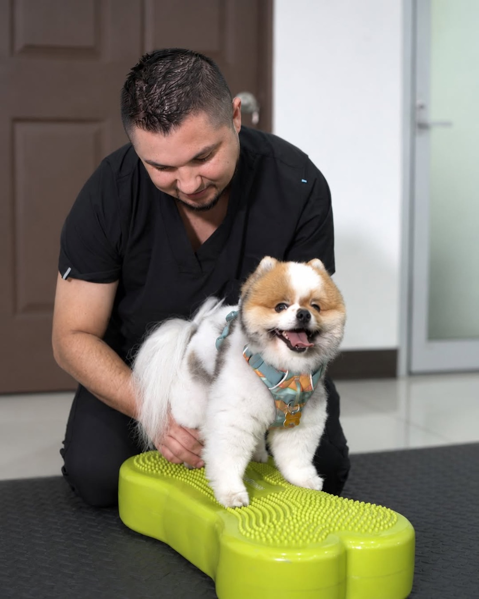

01
Terapia física
Modalidades terapéuticas combinadas con terapia manual y ejercicio terapéutico.
Las modalidades terapéuticas nos proporcionan manejo del dolor, de la inflamación y bienestar en el paciente.
Rehabilitación veterinaria Sabana Norte y Heredia
Si tu mascota tiene dificultad para moverse o acaba de pasar por una cirugía de ortopedia o neurología, la rehabilitación veterinaria es la mejor opción para ayudarle. Atendemos perros y gatos en Sabana Norte y Heredia. La atención está a cargo de médicas veterinarias especializadas en rehabilitación veterinaria.

01 Qué hacemos

La rehabilitación comprende un conjunto de modalidades terapéuticas y ejercicios que ayudan a mejorar el dolor y la inflamación, promueven una cicatrización y sanación más temprana, además de fortalecer la musculatura y las articulaciones y trabajar la movilidad.
Atendemos perros y gatos post quirúrgicos de ortopedia o neurología, y también pacientes que no se operaron: perros mayores con artrosis, displasia de cadera, hernias de disco en manejo sin cirugía, sobrepeso que limita el movimiento, secuelas de una lesión neurológica, etc.
02 Tratamientos
En la primera consulta evaluamos a tu mascota, iniciamos con el protocolo de rehabilitación y te indicamos el proceso a seguir.
01
Modalidades terapéuticas combinadas con terapia manual y ejercicio terapéutico.
Las modalidades terapéuticas nos proporcionan manejo del dolor, de la inflamación y bienestar en el paciente.
02
Basada en la medicina china, la acupuntura le proporciona calidad de vida al paciente mediante el uso de agujas muy finas en puntos específicos de los meridianos energéticos del cuerpo, lo que ayuda al manejo de distintas enfermedades.
03 Hidroterapia
Es una banda caminadora dentro del agua. En este equipo podemos controlar la velocidad a la que camina el paciente, el peso que soporta sobre sí mismo y la temperatura del agua.
Gracias a los beneficios del agua sobre el tejido musculoesquelético, nos permite trabajar movilidad y fuerza sin comprometer las articulaciones. ¡Además es una terapia sumamente segura para tu mascota!
Nuestra hidrocaminadora se encuentra en la sede de Sabana Norte. Es uno de los dos equipos de este tipo en clínicas veterinarias privadas del país. La sesión siempre la supervisa una doctora veterinaria dentro del área.

04 Casos frecuentes

De los motivos de consulta más frecuentes, sobre todo en razas condrodistróficas como el salchicha, el bulldog francés, el poodle o el corgi. Si tu perro dejó de mover las patas traseras, es una urgencia.
Leer
Luxación patelar, ruptura de ligamento cruzado, displasia de cadera o codo, fracturas y otras cirugías de ortopedia. Rehabilitación por fases desde el día después de la cirugía.
Leer
La mayoría de los perros con displasia no se opera. Se maneja con control de peso, fisioterapia y analgesia.
Leer
Un perro mayor que camina más lento o que se levanta con dificultad casi siempre tiene dolor de articulación, y ese dolor se trata.
Leer
Los gatos esconden el dolor y cambian de hábitos. Atendemos gatos en las dos sedes.
Leer
La hidrocaminadora, en la sede de Sabana Norte. Para post operatorios, hernias de disco, displasia y artrosis.
Leer05 Testimonios
Vet Rehab tanto para mí como para Oreo ha sido una paz. Por la condición de Oreo, llegó a un punto que lloraba mientras comía del dolor, y ahora tiene la mejor calidad de vida posible. De hecho no ha tenido una crisis, me atrevo a decir, en al menos un año. De verdad no tengo palabras para agradecer a Caro y a todo su equipo, le cambiaron la vida a mi bebé.
Cuando comenzamos a tener problemas articulares por la edad avanzada de Ninita, buscamos asesoría con nuestra médico de cabecera, ella conocía a la Dra. Caro y su carisma, por lo que nos recomendó ir a Vet Rehab, y fue como habernos ganado la lotería. Cada una de las profesionales que nos han atendido han sabido valorar y ayudar a Ninita en el camino, estamos muy contentas con su trabajo multidisciplinario, las admiramos y queremos mucho. Referencia 100 de 100.
Vet Rehab significa confianza, prontitud y cariño para nosotros y nuestra Ruby.
06 Quién atiende

Médica veterinaria · CCRP · CCMT
Médica veterinaria, fundadora y directora de Vet Rehab. Certificada en rehabilitación canina (CCRP) por la Universidad de Tennessee y en terapia manual canina (CCMT) por North Carolina State University. Es una de cinco profesionales con la certificación CCRP en Costa Rica.
Vet Rehab empezó en 2020 atendiendo a domicilio y en clínicas de colegas. Hoy tiene un equipo de médicas veterinarias, asistentes y recepción, y dos sedes, en Sabana Norte y en Heredia. La consulta es en español y en inglés.
07 Dónde estamos
Atendemos en Sabana Norte y en Heredia. La hidrocaminadora está en Sabana Norte y los demás tratamientos se hacen en las dos sedes.

Sede Sabana Norte
Mata Redonda, 200 metros oeste del ICE de Sabana. Primer piso del condominio Torres del Parque, local #05.
Lunes a viernes 9:00 a 18:00 · Sábado 8:00 a 13:00
WhatsApp 8632-1129
Ver la sede
Sede Heredia
Plaza Luvi, 175 metros oeste y 100 metros sur del Centro Comercial Oxígeno, contiguo a Gattos Centro Veterinario.
Lunes a viernes 9:00 a 18:00 · Sábado 8:00 a 13:00
WhatsApp 8784-5220
Ver la sedeCuando el traslado es un problema, vamos a la casa: perros grandes que no pueden subir al carro sin dolor, post operatorios con el movimiento restringido y pacientes mayores. Llevamos el equipo portátil y adaptamos los ejercicios al espacio de la casa. Cubrimos el Área Metropolitana y la visita tiene su propia tarifa. Escribinos con la dirección y te confirmamos si llegamos y qué días.
08 Colegas
Recibimos pacientes referidos y devolvemos por escrito la valoración de movilidad, el plan y la evolución. La medicina general sigue con quien refirió el caso.
También damos terapia dentro de clínicas de colegas cuando trasladar al paciente complica el tratamiento.

09 Preguntas frecuentes
Los precios de la valoración, de las sesiones en clínica y de la visita a domicilio te los mandamos por WhatsApp. Contanos qué le pasa a tu mascota y de qué zona venís.
Cada paciente y cada recuperación son distintos, por lo que debemos evaluarlo primero para poder darte un estimado de sesiones para una recuperación exitosa.
Claro. En ambas sedes atendemos gatos también. Más sobre fisioterapia en gatos.
Trabajamos con muchos pacientes referidos directamente por colegas ortopedistas, pero no es necesario que te refieran. Te van a atender médicas veterinarias capacitadas para examinar a tu mascota y orientarte en los pasos a seguir. Si ya tenés exámenes como radiografías, TAC o resonancia, traelos a la consulta.
Para nada. De hecho, cuanto antes se inicie el proceso de rehabilitación después de una cirugía de ortopedia o neurología, mejor.
Tenemos sede en Sabana Norte y en Heredia, y hacemos visitas a domicilio en el Área Metropolitana. Escribinos con la dirección y te confirmamos si llegamos y qué días.
Agendar cita
Escribinos por WhatsApp y contanos qué le pasa a tu mascota. Si tu perro dejó de mover las patas de un momento a otro, llamá en vez de escribir.